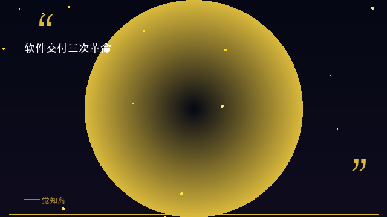
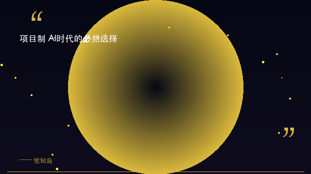
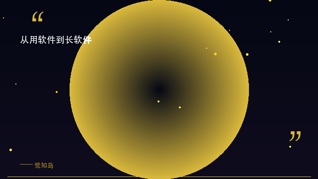

你是不是也有这种感觉——手机里装了上百个 App，真正每天打开的不到十个；电脑里订阅了一堆 SaaS 工具，数据散落在各个平台，迁移一次脱一层皮。软件越来越多了，但我们对软件的控制力却越来越弱了。
软件的发展史，本质上是一场用户主权的争夺战。今天我们聊聊这场战争的第三阶段——以及为什么说，未来的软件不是「用」的，而是「长」出来的。
回顾软件交付史，我们经历了三次根本性的范式转移。
1.0 买断制：买一张光盘，装一次，用到天荒地老——或者用到软件过时。这是 PC 互联网时代的标配。优点是买断即拥有，缺点是升级靠运气，bug 靠忍耐。
2.0 订阅制：每个月交钱，功能持续更新，体验越来越好——但你的数据在别人手里。SaaS 模式让软件变得像水电一样方便，却也把用户锁定在了一个个封闭的花园里。你用的不是软件，是平台的「租界」。
3.0 项目制：不是「安装」软件，而是「创建」项目。项目是一个能力单元，它不是固定功能的 App，而是一个可以根据你需求生长、进化、组合的动态空间。可创建、可配置、可进化、可分享、可迁移——这是项目制的五大核心特征。
软件交付三次革命，本质是用户主权的三次回归。

AI Agent 的爆发正在从根本上改变我们对软件的认知。过去，软件是「工具」——你需要打开它、学习它、操作它。现在，软件正在变成「服务」——你告诉 Agent 要做什么，它替你去完成。你不操作软件，你指挥软件。
但问题来了：单 Agent 不够用。真正的工作场景需要 多 Agent 协作——一个负责搜索、一个负责写代码、一个负责部署；需要 知识库沉淀——让经验不会随对话结束而消失；需要 工作流编排——让能力串联成自动化管线。传统的「安装即固定功能」的软件模型，根本无法承载这种复杂度。
ClawDao 给出的答案是：项目 = AI 时代软件的最小原子单位。一个项目承载 Agent、知识库、数字人、工作流和历史记录，它是活的、可生长的、可组合的。项目不是一个静态容器，而是一个会随着你的使用不断进化的有机体。

什么叫「长软件」？它和传统软件的根本区别在哪里？我们总结了四个关键特征：
① 可配置：项目从空白开始，你决定它长成什么。不像传统软件「打开就是固定的」，ClawDao 的项目是你定义的——你需要什么 Agent、配什么知识库、搭什么工作流，完全由你做主。
② 可进化：项目积累对话、知识、行为模式，越用越强。这得益于 A4 自演化引擎——每一次交互都在训练你的项目，让它越来越懂你的需求。传统软件越用越「旧」，ClawDao 项目越用越「新」。
③ 可组合：多个项目可以协作，形成更大的能力网络。一个「产品规划」项目可以调用「用户调研」项目的数据，一个「自动部署」项目可以触发「测试验证」项目的流程。项目之间不是孤岛，是生态。
④ 可继承：项目可导出、可分享、可 fork——能力实现代际传递。你花三个月打磨的项目，可以一键分享给团队新人使用。这就像基因遗传一样，优秀的「项目基因」能够被复制和进化。
代码是死的，项目是活的。因为项目里有对话、有知识库、有持续的进化——这是「长软件」和传统软件最本质的区别。

观念的改变比工具的安装更重要。这里有三条可以立即开始行动的建议：
第一，改变认知。下次当你觉得「需要一个什么软件」时，先问自己：这能不能是一个项目？能不能在一个可进化的空间里长出来，而不是被一个固定功能的 App 锁死？
第二，小步快跑。选一个你最痛、最频繁的场景——比如「公众号选题」或者「竞品监控」——创建一个项目，加一个 Agent，跑起来。不要等完美，先让项目活起来。
第三，持续积累。不要频繁重建项目，让一个项目持续使用。对话越多、知识越多、迭代越多，它就越懂你。就像养一株植物——你需要的是耐心浇灌，而不是每次都从种子开始。
从「用软件」到「长软件」，一字之差，背后是整个软件哲学的转变。我们正在告别一个「安装即完成」的时代，进入一个「创建即开始」的时代。ClawDao 不是越用越卡，而是越用越强——因为你的所有项目，都在帮你积累能力，而不是消耗算力。
觉知岛的核心理念是「知人者智，自知者明」。在这个软件范式大转型的时刻，真正的智慧不是追逐最新的工具，而是理解工具进化的底层逻辑——然后，让自己的能力跟着它一起生长。
你觉得未来我们还会「安装」软件吗？还是会在一个平台里「创建」项目、让能力自然生长？欢迎在评论区聊聊你的想法 🌱